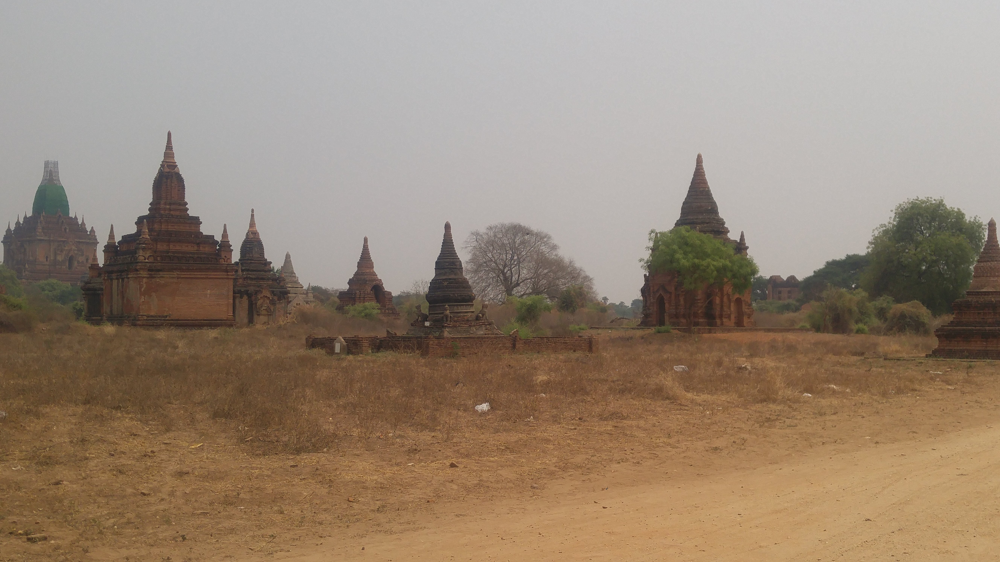

Go Back
Bagan

Bagan was an ancient city and is now a UNESCO world heritage site. It's located in the Mandalay Division of Myanmar. It was the capital of the Pagan Kingdom of Burma, the first kingdom to unify the territories that make up modern day Myanmar. During the Kingdoms co-existing in the 11th and 13th centuries, More than 10,000 Buddhist temples, pagodas and monasteries built Bagan, of which more than 2200 temples and pagodas still stand today. The Bagan Archaeological Area is probably Myanmar's most important tourist destination. On 24 August 2016, a major earthquake hit central Myanmar and again did major damage in Bagan; this time almost 400 temples were destroyed. The New Bagan down sits to the South of the hundreds of temples and pagodas and is where most tourists stay while visiting the area. The town is charming and has the necessary tourist infrastructure such as hotels, ebike rentals and restaurants.
There are a few options for getting to Bagan. If you fly internationally into Yangon or Mandalay there are domestic flights that go to Bagan's Nyaung-U Airport. This would be the quickest way but definitely not the cheapest. My itinerary in Myanmar took me from Yangon in the south up to Inle Lake and then from there to Bagan before ending my trip in Mandalay. I took a bus from Nyaung Shwe (by Inle Lake) to Bagan. I won't lie this bus journey was beautiful but a bit frightening. One interesting thing in Myanmar is that the cars are all right hand drive but they drive on the right side of the road. This can make passing on windy roads a bit unnerving, not to mention the flat tire we got. However I'm confident many people have better experiences and I still enjoyed the spectacular scenery from the mountains and seeing all the small villages and towns along the way. Once we arrived in Bagan we were dropped off right at our accomodation. If you are in Yangon I wouldn't recommend coming directly to Bagan by bus because it would be quite a long journey. I recommend stopping in Inle Lake or maybe even the empty capital city of Naypyidaw to break up the journey. If you are in Mandalay however it's a relatively short and manageable bus ride on a flatter, better paved road. These are basically your two options to get to Bagan.
As mentioned there are hundreds of temples and pagodas still standing in the area and the most popular way to go around is by renting an ebike. Motorbike rentals are illegal for foreigners in Myanmar (at least they were in 2018) but the ebikes basically function the same albeit a bit slower. From the main town rent an ebike and download the Maps.Me app to put some pins on important locations. This app is great for travelling in less developed areas as you can download regions or entire countries then the map functions without internet. You can place pins at places you want to visit and not have to worry about getting lost due to lack of wifi. As many of the temples don't have wifi or anything it's good to have a plan of where you're going. The accomodations can help to provide maps which highlight key places to visit. I'd recommend spending at least 2 days just exploring the area and all it has to offer. For me the most comparable place I've been was Angkor in Cambodia but the difference is in Bagan you might be the only person exploring a massive ancient temple. There is a one time entry fee to the archaeological area which I believe was about 20 usd. This fee is paid while you're entering the town on bus. I'm not sure how it would be paid if you are flying in, possibly at the airport.
Some of the Best Places to Visit
Gubyaukgi Temple
Shwesandaw Phaya
Ananda Temple
Ta Wet or Sulamani Sunset View
Sulamani Temple
Shwezigon Pagoda
Narathihapatae
There are literally hundreds of more temples but these are some of the largest and most important ones that are popular for both locals and tourists alike. You'll see many other ones scattered throughout the archaeological site and are free to stop by and explore any one of them. There used to be a few that you could actually climb to the rooftop to watch the sunset but according to the Maps.Me app many of these don't allow this anymore.
I enjoyed my stay at Ostello Bello in Bagan. As far as I can tell it's still operating. This hotel is located perfectly in New Bagan and will set you up to explore the area. They offer food, drinks, social activities, maps and advice on where to go. Back in 2018 you could rent an ebike from the small shop right next door to the hostel. I believe they also have some private rooms as well. Near Ostello Bello were the majority of the towns restaurants geared for tourists. Again as of 2022, I wouldn't recommend visiting Myanmar but if you do this is a good place to stay. If things stabilize in the country again Bagan is certainly worth a visit and it's one of the more unique places I've ever experienced.
There were some good restaurants right across the street from Ostello Bello. I recall Rose Cafe and the Black Rose restaurants. I had a very nice duck dish from the Black Rose restaurant. They offer a variety of foods ranging from pizza to curries and vermicelli style dishes. There are a decent amount of restaurant options in the New Bagan town area.